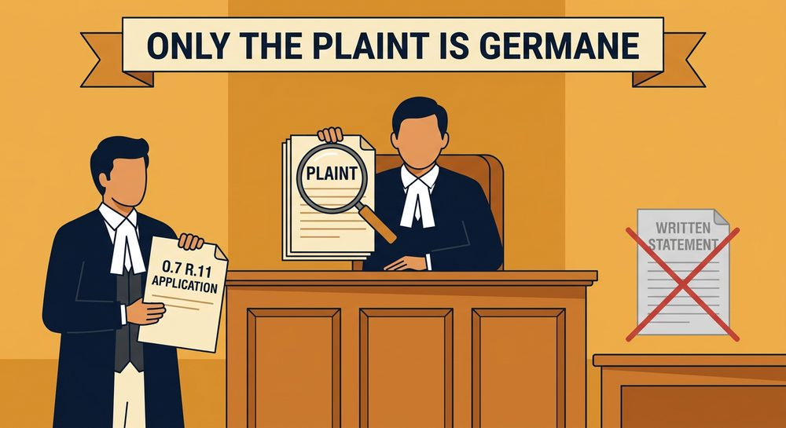
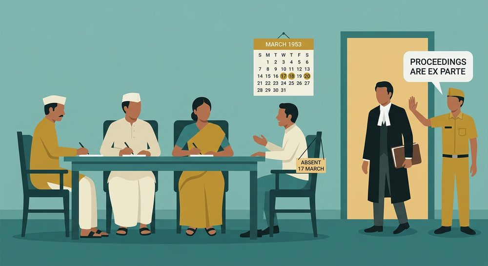
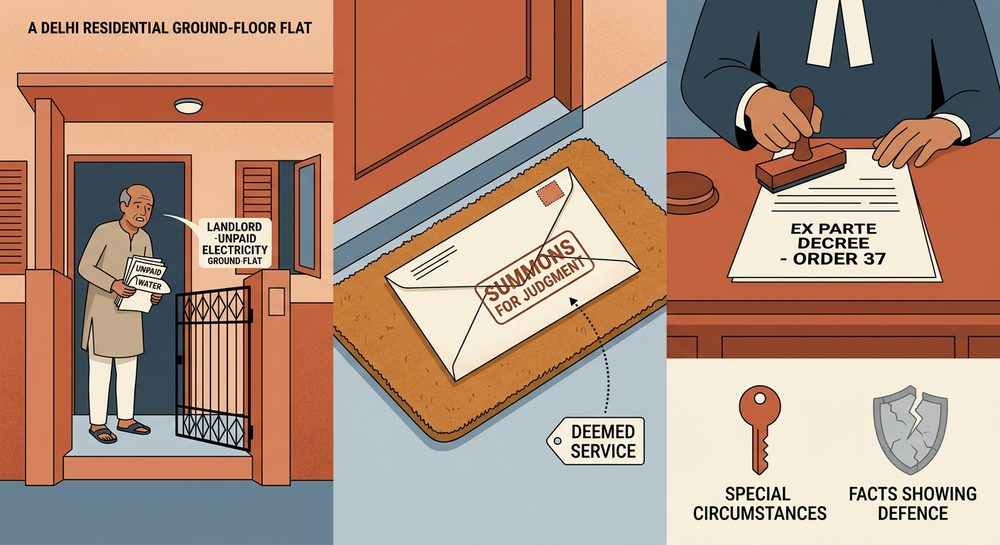
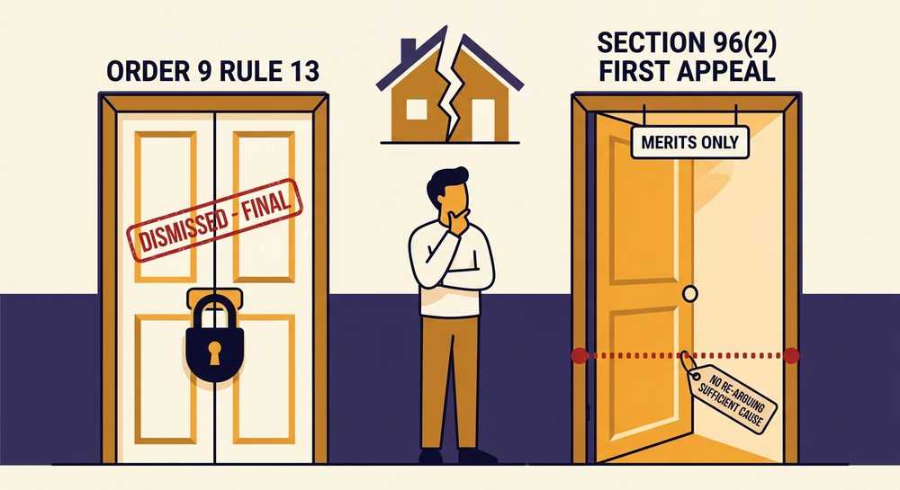

A complete, provision-by-provision and case-by-case treatment of Topic 11 (Order VII, Rule 11) and Topic 12 (Order IX, Rules 6, 7 and 13) of the prescribed DU Case Material — with flowcharts, comparative tables, hypothetical case visuals and previous-year questions with model answers.
The four cases at pages 72, 74, 85 and 88 of the Case Material are reproduced here in the full DU answer format — Facts → Issues → Arguments of both sides → Decision → Principle/Ratio evolved — because that is precisely the shape in which the examiner expects a case to be written. Every statutory provision that the case material presupposes (the whole of Order VII Rule 11 and the whole of Order IX) has been set out in bare-Act text first, then unpacked element by element, then diagrammed. Supporting Supreme Court authorities are given only where they explain or extend the four prescribed cases — the core of every answer must remain the prescribed four.
Prescribed case: 15. Saleem Bhai v. State of Maharashtra, AIR 2003 SC 759 (Case Material, p. 72)
A civil suit is instituted by the presentation of a plaint (Section 26 read with Order IV, Rule 1). The plaint is the foundation-stone of the entire structure of a suit: everything that follows — summons, written statement, issues, evidence, judgment, decree — rests upon it. The Code therefore builds in a threshold filter: before the machinery of a full trial is set in motion, the Court must satisfy itself that the plaint is at least legally capable of sustaining a suit. That filter is Order VII, Rule 11.
| Provision | Subject | Relevance to Topic 11 |
|---|---|---|
| O.VII Rr. 1–8 | Particulars to be contained in a plaint; how a claim for money, immovable property, mesne profits etc. is to be pleaded | Defects here may translate into a Rule 11 ground (e.g. no cause of action under R.1(e)) |
| O.VII R. 9 | Procedure on admitting plaint — plaintiff to present copies of plaint for each defendant and pay process fee within 7 days | Directly a ground of rejection: Rule 11(f) |
| O.VII R. 10 | Return of plaint — where the Court has no jurisdiction, plaint is returned for presentation to proper Court | The great contrast to rejection — see §8 |
| O.VII R. 11 | REJECTION OF PLAINT — six grounds | The prescribed topic |
| O.VII R. 12 | Procedure on rejecting plaint — Judge shall record an order to that effect with the reasons | Mandatory reasons; makes the order appealable and testable |
| O.VII R. 13 | Rejection of plaint not a bar to a fresh plaint on the same cause of action | Softens the harshness of rejection — no res judicata |
| O.VII Rr. 14–18 | Documents relied on to be produced/filed with the plaint | Documents annexed to plaint are read with the plaint under R.11 |
Section 26 (suit to be instituted by presentation of plaint) · Order IV Rule 1 (institution of suits) · Section 2(2) (definition of decree — rejection of plaint is deemed to be a decree) · Section 96 (appeal from original decree) · Order VII Rules 9–13 · Section 151 (inherent powers, as invoked in Saleem Bhai itself).
The real object is "to keep out of Courts irresponsible law-suits". A suit that is bound to fail should not be allowed to occupy the Court's time or the defendant's mind.
"A party should not be unnecessarily harassed in a suit." Rejection saves an innocent defendant from years of vexatious trial.
Docket-management device: nip meritless claims in limine instead of after a decade of trial.
Where the legislature has expressly barred a class of suits (limitation, res judicata, S.80 notice, statutory ouster), clause (d) enforces that bar at the threshold.
Clauses (b) & (c) protect the revenue: correct court-fee and correct valuation are conditions of access to the Court.
Clauses (e) & (f) (1999 Amendment) force the plaintiff to complete formalities promptly so that summons can issue without delay.
| Attribute | Explanation & Authority |
|---|---|
| Mandatory, not discretionary | The word used is "shall be rejected". Once the Court concludes that a ground under (a)–(f) exists, rejection follows as a matter of law. The Court cannot "condone" a want of cause of action. |
| Exercisable suo motu | No application by the defendant is necessary. It is a duty cast on the Court. The Court may reject the plaint even before registering it, without hearing the defendant at all — because at that stage only the plaint is being read. |
| Exercisable at ANY stage | Saleem Bhai: "before registering the plaint or after issuing summons to the defendant at any time before the conclusion of the trial." |
| Draconian / extraordinary | Because it terminates the suit without trial, it must be exercised "with great caution and circumspection", only in clear and manifest cases. |
| Grounds are not exhaustive of dismissal | Rule 11 lists the cases in which a plaint is rejected; a suit may still be dismissed on other grounds after trial. Rejection ≠ dismissal. |
| Plaint rejected as a WHOLE | There can be no partial rejection of a plaint. It is rejected in its entirety or not at all. (Partial striking out of pleadings is a different power, under Order VI Rule 16.) Corollary: if even one of several reliefs is maintainable/within limitation, the plaint survives. |
A cause of action is the bundle of essential facts which it is necessary for the plaintiff to prove, if traversed, in order to support his right to the judgment of the Court. It is not defined in the Code, but it comprises:
It does not include the evidence by which those facts are to be proved, nor the defence. It is "a cause of action" as against the particular defendant impleaded — hence a plaint disclosing a cause of action against X but naming Y as defendant discloses no cause of action.
A weak, doubtful or difficult-to-prove cause of action is NOT a ground of rejection — that is what the trial is for. Only the total absence of a cause of action attracts clause (a). Similarly, misjoinder of parties or of causes of action is not a ground of rejection (Prem Lala Nahata v. Chandi Prasad Sikaria, (2007) 2 SCC 551) — a suit suffering from misjoinder is not a suit "barred by any law".
This clause has two limbs and a built-in second chance. Rejection is not automatic on undervaluation:
The proviso then governs extension of that time: the Court cannot extend it unless (i) it records reasons; (ii) it is satisfied the plaintiff was prevented by "a cause of an exceptional nature"; and (iii) refusal would cause "grave injustice". All three conditions are cumulative.
Here the relief is properly valued but the plaint is written on paper carrying deficient court-fee. The structure is identical to clause (b): Court requires supply of requisite stamp-paper → fixes time → failure → rejection, with the same proviso controlling extension.
A plaintiff genuinely unable to make good the deficiency may apply to sue as an indigent person under Order XXXIII. Further, courts have consistently held that an order under clause (c) must be passed only after granting the plaintiff a reasonable opportunity to make up the deficiency — the clause is not a trap.
This is by far the most litigated clause, and it is the clause under which Saleem Bhai was argued (along with clause (a)). Three elements must be dissected:
| Element | Meaning |
|---|---|
| "the suit" | The whole suit must be barred. If several reliefs are claimed and even one is not barred, the plaint cannot be rejected (no partial rejection). |
| "appears from the statement in the plaint" | The bar must be apparent on the face of the plaint (and the documents filed with it). The Court may not look at the written statement, affidavits, or evidence. This is the statutory root of the Saleem Bhai principle. |
| "barred by any law" | Any law — substantive or procedural, general or special. Includes: the Limitation Act; res judicata (S.11); Order II Rule 2; want of notice under S.80 CPC; S.9 CPC ouster by a special statute (e.g., tenancy, revenue, industrial law); the doctrine of lis pendens (S.52 TPA, as urged in Saleem Bhai); bar under specific enactments such as the Benami Act, the Specific Relief Act, etc. |
Limitation is ordinarily a mixed question of law and fact, and is normally to be tried as an issue. But:
Inserted by Act 46 of 1999. Read with Order IV Rule 1(1) (suit instituted by presenting a plaint in duplicate). The object is administrative — one copy for the record, one for service/registration — so that the machinery of summons is not delayed. Courts treat this as a curable irregularity in practice and almost invariably allow the defect to be made good, but the text is mandatory.
Clause (f) therefore penalises the plaintiff who, having got his plaint admitted, then sleeps over the service of summons. Again, a 1999-Amendment anti-delay device.
Your Case Material distils Saleem Bhai into two propositions. Reproduce them in exactly this form in the exam:
The only material germane to an application under Order VII Rule 11 is the averments in the plaint (together with the documents filed with and relied upon in the plaint). The Court must confine itself strictly to the four corners of the plaint.
The pleas taken by the defendant in the written statement are wholly irrelevant at that stage. Consequently, the filing of a written statement is unnecessary, and to direct its filing before deciding the Rule 11 application is a procedural irregularity and a failure to exercise jurisdiction.
Saleem Bhai answers this in one breath — "at any stage of the suit", and then illustrates three points on the timeline:
On rejecting a plaint, the Judge shall record an order to that effect with the reasons. Reasons are indispensable because (i) the order is a deemed decree and appealable; (ii) the appellate court must know the ground; and (iii) it disciplines the trial judge against mechanical rejection.
Rejection "shall not of its own force preclude the plaintiff from presenting a fresh plaint in respect of the same cause of action." This is the great mitigating feature. It means:
| Consequence | Explanation |
|---|---|
| Deemed decree | Section 2(2) expressly deems rejection of a plaint to be a decree, even though there is no adjudication on merits. |
| First appeal lies under S. 96 | Because it is a decree, the plaintiff's remedy is a regular first appeal under Section 96 — not an appeal from order under Order XLIII. |
| Refusal to reject = an ORDER | An order refusing to reject the plaint is not a decree (the suit continues) and is not listed in Order XLIII Rule 1. Therefore no appeal lies; the defendant's remedy is a revision under S.115 or, in appropriate cases, Article 227. |
| Fresh plaint permitted | Order VII Rule 13 (see §6.3). No res judicata. |
| Court fee | Generally refundable/adjustable in appropriate cases under the Court Fees Act where the plaint is rejected under clauses (b)/(c) before trial. |
| Point | REJECTION of Plaint O.VII R.11 | RETURN of Plaint O.VII R.10 | DISMISSAL of Suit e.g. O.IX R.8, after trial |
|---|---|---|---|
| Ground | Six statutory grounds (a)–(f) | Court has no jurisdiction (pecuniary, territorial or subject-matter) | Default of appearance, or failure to prove the case at trial |
| What happens to the paper | Plaint is rejected and retained on record; a formal order with reasons is passed (R.12) | Plaint is physically returned with an endorsement of date of presentation/return, party's name and reasons (R.10A) | Plaint remains; the suit is dismissed |
| Merits examined? | No — only the plaint is read | No — only jurisdiction is examined | May or may not be (dismissal after trial is on merits) |
| Nature of order | Deemed DECREE — S.2(2) | ORDER — appealable under O.XLIII R.1(a) | Dismissal for default = order (S.2(2)(b) excludes it); dismissal after trial = decree |
| Remedy | First appeal, S.96 | Appeal under O.XLIII R.1(a); or re-present to proper Court | O.IX R.9 (restoration) / S.96 appeal, as the case may be |
| Fresh suit? | Permitted — O.VII R.13, subject to limitation | Not a fresh suit: the same plaint is presented to the proper Court | Dismissal for default: fresh suit barred by O.IX R.9; dismissal on merits: barred by res judicata, S.11 |
| Res judicata? | No | No | Yes, if decided on merits |

The short common question: Whether an application under Order VII Rule 11 CPC ought to be decided on the allegations in the plaint alone, and whether the filing of a written statement by the contesting defendant is irrelevant and unnecessary for that purpose?
Sub-issues embedded in the main question:
| FOR THE APPELLANT (Defendant No. 8 — Saleem Bhai) | FOR THE RESPONDENTS (Plaintiffs) — Mr. K. K. Venugopal, Sr. Adv. |
|---|---|
|
|
The appeals were ALLOWED.
THE SALEEM BHAI PRINCIPLE
Notice the Court's own words: "For the purposes of deciding an application under clauses (a) and (d)…". The plaint-only rule fits those two clauses perfectly because both are, by their nature, determined on the face of the plaint. Clauses (b), (c), (e) and (f) are different in structure — they involve the Court requiring the plaintiff to do something (correct valuation, supply stamp paper, file duplicate, comply with R.9) and then examining whether he did it. That enquiry necessarily looks at the record, not merely at the plaint's averments. A sharp answer notes this limitation while affirming that the broad principle — exclusion of the defence — holds good for all six clauses.
The Saleem Bhai rule has been consistently followed and is now regarded as settled law:
| Case | Proposition |
|---|---|
| T. Arivandandam v. T.V. Satyapal (1977) 4 SCC 467 | The plaint must be read meaningfully. If it is manifestly vexatious and meritless and does not disclose a "clear right to sue", the trial court must exercise Rule 11 power. Krishna Iyer, J.'s celebrated warning against "clever drafting". |
| Azhar Hussain v. Rajiv Gandhi 1986 Supp SCC 315 | Object of the power: litigation "meaningless and bound to prove abortive" should not occupy the Court's time or exercise the respondent's mind. |
| ITC Ltd. v. Debts Recovery Appellate Tribunal (1998) 2 SCC 70 | The averments in the plaint must be read as a whole to find out whether they disclose a cause of action or whether the suit is barred by any law. Clever drafting cannot save a barred suit. |
| Saleem Bhai v. State of Maharashtra AIR 2003 SC 759 PRESCRIBED | Plaint-only rule; exclusion of written statement; any-stage rule; duty to decide the application before directing a W.S. |
| Sopan Sukhdeo Sable v. Asstt. Charity Commr. (2004) 3 SCC 137 | Only the plaint is to be seen; the Court is not to embark on an enquiry into the truth of the averments. |
| Liverpool & London S.P. & I Assn. v. M.V. Sea Success I (2004) 9 SCC 512 | The test: if the averments in the plaint, taken with the documents relied on, are proved, would a decree be passed? Real v. illusory cause of action. |
| Popat & Kotecha Property v. SBI Staff Assn. (2005) 7 SCC 510 | Clause (d) is confined to what "appears from the statement in the plaint"; the plaint cannot be rejected on a plea requiring evidence. |
| Prem Lala Nahata v. Chandi Prasad Sikaria (2007) 2 SCC 551 | Misjoinder of parties or of causes of action is NOT a ground for rejection — such a suit is not one "barred by any law". |
| Church of Christ Charitable Trust v. Ponniamman Educational Trust (2012) 8 SCC 706 | Cause of action is a bundle of facts; a plaint not disclosing it must be rejected. Elements of a cause of action explained. |
| Nusli Neville Wadia v. Ivory Properties (2020) 6 SCC 557 | Limitation may found a clause (d) rejection where the bar appears from the plaint itself and no further evidence is needed. |
| Dahiben v. Arvindbhai Kalyanji Bhanusali (2020) 7 SCC 366 | Rule 11 is a "rigorous" filter to nip in the bud litigation that is bound to fail; it prevents wastage of judicial time. |
| Srihari Hanumandas Totala v. Hemant Vithal Kamat (2021) 9 SCC 99 | Res judicata cannot ordinarily be decided under O.VII R.11(d), because it requires examination of the previous plaint, written statement, issues and judgment — material beyond the present plaint. |
Prescribed cases: 16. Sangram Singh (p.74) · 17. Rajni Kumar (p.85) · 18. Bhanu Kumar Jain (p.88)
Order IX Rule 1 then imposes the mandatory obligation:
Under Order III Rules 1 and 2, appearance may be:
The party himself attends the Court-house.
O.III R.2 — a holder of power-of-attorney, or a person carrying on trade/business for the party, etc.
An advocate duly appointed by vakalatnama. He must be instructed and able to answer all material questions; otherwise the appearance is no appearance in law.
Where a pleader appears but reports "no instructions", or is unable to answer material questions relating to the suit and no other person able to do so accompanies him, the party is treated as not having appeared (Order V Rule 1 proviso / Order III). Similarly, a party who is physically present in the Court-house but does not answer when the suit is called on is deemed absent.
This distinction is the hinge on which Sangram Singh turns, and no answer on Order IX is complete without it.
| Aspect | FIRST HEARING | ADJOURNED / SUBSEQUENT HEARING |
|---|---|---|
| Which day? | The day fixed in the summons for the defendant to appear and answer (O.IX R.1) | Any day to which the hearing is subsequently adjourned by the Court |
| Purpose (O.V R.5) | Summons must state whether it is for settlement of issues only or for final disposal of the suit | Continuation — evidence, arguments, judgment |
| Governing provision on non-appearance | Order IX (Rr. 2–11) applies per se | Order XVII Rule 2 applies; it then throws the Court back to Order IX |
| Can an ex parte DECREE be passed? | Only if the first hearing was fixed for final disposal. If it was only for settlement of issues, the proviso to O.XV R.3(1) bars an ex parte decree on that date (a decree there requires that "the parties or their pleaders are present and none of them objects") | Yes — the Court may dispose of the suit in one of the modes in Order IX, or make such other order as it thinks fit |
| Sangram Singh's holding | O.IX R.6(1)(a) is confined to the FIRST hearing and does not per se apply to subsequent hearings. At each adjourned hearing the Court is "thrown back to Order IX Rule 6" afresh — "the right to proceed ex parte is a right which accrues from day to day." | |
| Rule | Situation | Consequence / Remedy |
|---|---|---|
| R. 1 | Parties to appear on the day fixed in summons | Mandatory attendance in person or by pleader; suit heard unless adjourned |
| R. 2 | Summons not served in consequence of plaintiff's failure to pay costs / present copies | Court may dismiss the suit. Proviso: no dismissal if the defendant appears in person or by agent. Remedy → R.4 |
| R. 3 | NEITHER PARTY appears when the suit is called on for hearing | Court shall make an order that the suit be dismissed. Not on merits → no res judicata |
| R. 4 | Remedy after dismissal under R.2 or R.3 | Plaintiff may (i) bring a FRESH SUIT (subject to limitation); or (ii) apply to set aside the dismissal on showing sufficient cause. Both routes open |
| R. 5 | Plaintiff fails, for 7 days after return of unserved summons, to apply for fresh summons | Suit dismissed (unless plaintiff satisfies the Court of the grounds in R.5(1)(a)–(c)). Fresh suit permitted, subject to limitation |
| R. 6 | PLAINTIFF appears, DEFENDANT does not | (a) Summons duly served → Court may proceed EX PARTE; (b) Not duly served → fresh summons; (c) Served but not in sufficient time → adjournment, and costs on the plaintiff if the fault was his |
| R. 7 | Defendant appears at an adjourned hearing and assigns GOOD CAUSE for previous non-appearance | He may, on such terms as to costs as the Court directs, be heard in answer to the suit "as if he had appeared on the day fixed" — i.e., relegated back to the earlier stage |
| R. 8 | DEFENDANT appears, PLAINTIFF does not | Court shall dismiss the suit — unless the defendant admits the claim or part; then decree on the admission, dismissal as to the rest |
| R. 9 | Effect of dismissal under R.8 | FRESH SUIT BARRED on the same cause of action. Sole remedy: apply to set aside the dismissal on proof of sufficient cause. (Contrast R.4!) |
| R. 10 | Several plaintiffs; some appear, some do not | Court may permit the suit to proceed as if all had appeared, or make such order as it thinks fit |
| R. 11 | Several defendants; some appear, some do not | Suit proceeds; at the time of pronouncing judgment the Court makes such order as it thinks fit against the non-appearing defendants |
| R. 12 | Party ordered to appear in person fails to do so without sufficient cause | Subject to all the provisions of the foregoing rules applicable to non-appearing plaintiffs / defendants. Marginal note uses the word "consequence", not "penalty" — a point Bose, J. relies on |
| R. 13 | SETTING ASIDE AN EX PARTE DECREE against a defendant | On proof that (i) summons was not duly served, or (ii) he was prevented by SUFFICIENT CAUSE from appearing, the Court shall set aside the decree on terms. Two provisos + Explanation |
| R. 14 | No decree to be set aside without notice to the opposite party | Natural justice safeguard: the plaintiff must be heard before his decree is undone |
If he too is absent, R.3 (neither) or R.8 (only defendant) governs instead.
Neither in person, nor by recognised agent, nor by an instructed pleader.
"If it is proved that the summons was duly served" — the burden is on the plaintiff. Without proof of due service the Court must issue a second summons under R.6(1)(b); an ex parte decree passed without proof of service is a nullity.
"Ex parte" merely means "in the absence of the other party". Rule 6(1)(a) "does nothing more than remove a bar" — it authorises the Court to do what it could not otherwise have done, namely to proceed in the absence of one of the parties. It does not operate as a punitive order shutting the defendant out for all time.
That "ex parte" means the Court is at liberty to proceed without the defendant until the termination of the proceedings, unless he shows good cause for his non-appearance and gets the "ex parte order" set aside. Hariram v. Pribhdas, AIR 1945 Sind 98. The Supreme Court in Sangram Singh expressly disapproved this line.
| Question | Answer (per Sangram Singh) |
|---|---|
| What does Rule 7 give? | The right to be relegated to the earlier stage — to "set back the hands of the clock" and be heard as if he had appeared on the original date (so he may file a written statement, cross-examine witnesses already examined, etc.). |
| What is the price? | He must "assign GOOD CAUSE" for his previous non-appearance, and accept such terms as to costs as the Court directs. |
| If NO good cause is shown, is he shut out altogether? | NO — this is the crux. "This cannot be read to mean, as it has been by some learned Judges, that he cannot be allowed to appear at all if he does not show good cause. All it means is that he cannot be relegated to the position he would have occupied if he had appeared." He may still appear and take part from the stage at which he comes in. |
| Is any "order" required to be set aside first? | No. Unlike Rule 13 (which speaks of the Court making "an order setting aside the decree"), Rule 7 contemplates no order at all. "No order is contemplated by the Code and therefore no order to set aside the order is contemplated either." A decree, being a command of the Court, must be formally set aside; a mere fact recorded in the minutes need not be. |
| When is Rule 7 NOT available? | Where the hearing of the suit is complete and the suit has been adjourned only for pronouncing judgment. At that point there is no "hearing" left to be heard in answer to — Arjun Singh v. Mohindra Kumar, AIR 1964 SC 993; affirmed in Bhanu Kumar Jain. |
| Rule 4 (after R.2/R.3 dismissal) | Rule 9 (after R.8 dismissal) | |
|---|---|---|
| Who was absent? | Both parties, or summons unserved due to plaintiff's default | The plaintiff alone; the defendant attended |
| Fresh suit? | PERMITTED, subject to limitation | BARRED — expressly precluded |
| Restoration? | Available on "sufficient cause" | Available on "sufficient cause" — the only route |
| Rationale | No one appeared; no party has been put to trouble; no vested advantage accrued to anyone | The defendant took the trouble to attend; he should not be dragged through the same litigation twice at the plaintiff's whim |
| Notice to opposite party | Required in practice | Expressly required — R.9(2) |
Where there are several plaintiffs and one or more appear while others do not, the Court may permit the suit to proceed as if all the plaintiffs had appeared, or make such order as it thinks fit. The appearing plaintiff effectively carries the suit.
Where there are several defendants and one or more appear while others do not, the suit shall proceed; and the Court shall, at the time of pronouncing judgment, make such order as it thinks fit with respect to the defendants who do not appear. (An ex parte decree may thus be passed against some defendants only — a fact that mattered greatly in Bhanu Kumar Jain.)
Where a party ordered to appear in person does not appear and cannot show sufficient cause, he is subject to all the foregoing rules applicable to non-appearing plaintiffs/defendants. Note the marginal note: "Consequence of non-attendance" — not "penalty". Bose, J. used this very word to show that Order IX is not penal in character.
No decree shall be set aside on any application under Order IX unless notice of the application has been served on the opposite party. A pure natural-justice safeguard: the decree-holder must be heard before his decree is undone.
| Element | Detail |
|---|---|
| Who may apply? | The defendant against whom the ex parte decree is passed. Also his legal representatives (Raj Kumar v. Sardari Lal). A non-party may apply only if he shows that his interests are affected by the decree. |
| To which Court? | "the Court by which the decree was passed" — i.e., the trial court, not the appellate court. |
| When must an ex parte decree exist? | Rule 13 is available only after a decree is passed. Before a decree, the remedy at an adjourned hearing is Rule 7. |
| Ground 1 | Summons was not duly served. "Duly served" means served in accordance with Order V. Non-service goes to the root of jurisdiction and natural justice. |
| Ground 2 | Prevented by any SUFFICIENT CAUSE from appearing when the suit was called on for hearing. (See §9 below for the full jurisprudence.) |
| Nature of the power | Once a ground is established, the Court "shall" set aside the decree — mandatory. But it may impose terms as to costs, payment into Court, etc. |
| Effect of setting aside | The Court "shall appoint a day for proceeding with the suit". The suit is restored and proceeds as if no ex parte decree had been passed (Rajni Kumar). |
| Limitation | 30 days from the date of the decree, or (where summons was not duly served) from the date the applicant had knowledge of the decree — Article 123, Limitation Act, 1963. Delay condonable under Section 5. |
| Notice mandatory | Rule 14 — no decree shall be set aside without notice to the opposite party. |
| Appeal against R.13 order | An order rejecting an application under R.13 is appealable under Order XLIII Rule 1(d). (This route was actually taken, and lost, in Bhanu Kumar Jain.) |
Where the decree is of such a nature that it cannot be set aside as against the applying defendant alone (e.g., a joint and indivisible decree for partition or possession of joint property), the Court may set it aside as against all or any of the other defendants also — even those who did not apply. Prevents the absurdity of conflicting decrees in the same suit.
No Court shall set aside an ex parte decree merely because there was an irregularity in the service of summons, if it is satisfied that the defendant (i) had notice of the date of hearing and (ii) had sufficient time to appear and answer. This distinguishes a technical irregularity (curable) from total non-service (fatal). The burden of invoking this proviso lies on the plaintiff/decree-holder.
The Explanation (added by the 1976 Amendment) provides that if an appeal has been filed against the ex parte decree and disposed of on any ground other than withdrawal, no application under Rule 13 shall lie.
"Sufficient cause" is not defined in the Code — deliberately so, because "problems of human beings are so varied and complex". It is an elastic expression, to be determined on the facts of each case. The essential enquiry is:
Was the defendant's absence attributable to circumstances beyond his reasonable control, without negligence, inaction or want of bona fides on his part? Put negatively — sufficient cause means that the party "had not acted in a negligent manner", that there was no "want of bona fide", and that he cannot be said to have "not acted diligently" or "remained inactive".
A decision in an interlocutory proceeding of the kind contemplated by Order IX Rule 7 is not of a kind that can operate as res judicata so as to bar a hearing on the merits of an application under Order IX Rule 13. A Rule 7 order merely regulates procedure; it decides nothing finally and is not appealable. Contrast this carefully with Bhanu Kumar Jain, where the Rule 13 application had been dismissed and that dismissal had become final through appeal — a wholly different situation.
| SUFFICIENT CAUSE — typically ACCEPTED | NOT SUFFICIENT CAUSE — typically REJECTED |
|---|---|
|
|
At an adjourned hearing, Order XVII Rule 2 applies; it directs the Court to dispose of the suit "in one of the modes directed by Order IX", plus gives it the extra power to "make such other order as it thinks fit". "When it goes back to Order IX it finds that it is again empowered to proceed ex parte on the adjourned hearing in the same way as it did, or could have done, if one or other of the parties had not appeared at the first hearing — that is to say, the right to proceed ex parte is a right which accrues from day to day… It is not a mortgaging of the future."
Order XXXVII Rule 7 provides that "save as provided [in Order XXXVII], the procedure in suits hereunder shall be the same as the procedure in suits instituted in the ordinary manner." Because Rule 4 of Order XXXVII specifically provides for setting aside a decree, the general provision — Order IX Rule 13 — does not apply to a suit filed under Order XXXVII. This is the ratio of Rajni Kumar.
| Point | ORDER IX, RULE 7 | ORDER IX, RULE 13 |
|---|---|---|
| Stage | Before the ex parte decree — while the suit is still being heard ex parte and stands adjourned | After an ex parte decree has been passed |
| What is challenged | Not an "order" at all — the defendant simply seeks to be relegated to the earlier stage | A decree, which is a formal command of the Court and must be formally set aside |
| Test | "GOOD CAUSE" for previous non-appearance | Summons not duly served OR "SUFFICIENT CAUSE" for non-appearance |
| Is there a difference in the tests? | No material difference — Arjun Singh. If any, "good cause" is satisfied on a lesser degree of proof. | |
| Effect if the test is satisfied | He is heard "as if he had appeared on the day fixed" — the clock is turned back; he may file a W.S., cross-examine, lead evidence | The decree is set aside; a day is appointed and the suit proceeds as if no ex parte decree had been passed |
| Effect if the test FAILS | He may still appear and participate from that stage onwards; he simply cannot go back. (Sangram Singh) | The application is dismissed and the decree stands; his remaining remedies are S.96(2) appeal (on merits only) / review / fraud suit |
| Is a formal order needed? | No order of setting-aside is contemplated by the Code | Yes — "the Court shall make an order setting aside the decree" |
| Appealability | Interlocutory; not appealable. It does not operate as res judicata against a later R.13 application (Arjun Singh) | An order rejecting the application is appealable — O.XLIII R.1(d) |
| Limitation | None prescribed; must be made "at or before" the adjourned hearing | 30 days — Article 123, Limitation Act |
| Availability | Not available where the hearing is complete and the suit is adjourned only for pronouncing judgment (Arjun Singh) | Available whenever an ex parte decree exists (except where barred by the Explanation) |
| Point | ORDER IX, RULE 13 (ordinary suit) | ORDER XXXVII, RULE 4 (summary suit) |
|---|---|---|
| Applies to | Suits instituted in the ordinary manner | Summary suits under Order XXXVII (negotiable instruments, written contracts, statutory/debt claims) |
| Right to defend | The defendant has a right to contest the suit as a matter of course | The defendant has NO right to defend as a matter of course — he must enter appearance within 10 days and then obtain LEAVE to defend |
| Threshold expression | "summons not duly served" OR "sufficient cause" | "SPECIAL CIRCUMSTANCES" — something exceptional, extraordinary, significant, uncommon; the antonym of common, ordinary and general |
| What must the applicant show? | ONE thing — sufficient cause for non-appearance (or non-service). Nothing about the merits of his defence need be disclosed | TWO things — (i) special circumstances explaining his failure to appear/seek leave, AND (ii) facts which would entitle him to leave to defend, shown by affidavit or otherwise |
| Reliefs available | Setting aside the decree; the suit is restored | Wider: (i) set aside the decree; (ii) stay or set aside execution; (iii) give leave to appear to the summons; (iv) give leave to defend the suit — all on such terms as the Court thinks fit |
| Successive applications | — | Not permitted. Where more than one relief may be granted, all must be claimed in ONE application; successive petitions are contrary to the letter and spirit of the provision |
| Overlap | Order IX Rule 13 does NOT apply to a suit under Order XXXVII, because O.XXXVII R.4 specifically provides for setting aside such a decree (O.XXXVII R.7 read with the general/special rule) — Rajni Kumar v. Suresh Kumar Malhotra | |

| FOR THE APPELLANT (Sangram Singh) | FOR THE RESPONDENT (Bhurey Lal Baya) / SUPPORTING THE TRIBUNAL |
|---|---|
|
|
But the Court immediately counselled restraint: the Article 226 power is discretionary and must be exercised "along recognised lines and not arbitrarily". High Courts should not act as courts of appeal or revision to correct mere errors of law which do not occasion injustice in a broad and general sense, and should bear in mind the legislative policy of speedy disposal of election disputes. "Writ petitions should not be lightly entertained in this class of case."
Bose, J. traced the Code's own vocabulary: Section 27 empowers issue of summons to a defendant; Section 30 empowers issue of summons to witnesses; and Section 32 prescribes penalties for default — but confines those penalties to summonses under Section 30. "There is no penalty for a refusal or an omission to appear in response to a summons under Section 27." Certain consequences follow, and "popularly speaking, those consequences may be regarded as the penalty for non-appearance, but they are not penalties in the true sense of the term. They are not punishments which the Court is authorised to administer for disregard of its orders." The Court then noted that the heading of Order IX itself uses the word "consequence", and Rule 12's marginal note is "Consequence of non-attendance" — "The use of the word 'penalty' is scrupulously avoided." "We deprecate the tendency of some Judges to think in terms of punishment and penalties properly so called when they should instead be thinking of compensation and the avoidance of injustice to both sides."
The Rules in the First Schedule draw a distinction between the first hearing and subsequent hearings (O.V Rr.1, 5, 8; O.VIII R.1 speaks expressly of "the first hearing"). Order IX Rule 1 opens with the words "On the day fixed in the summons for the defendant to appear and answer", and the rest of Order IX is consequential on that. Hence: "Order IX Rule 6(1)(a) … is confined to the first hearing of the suit and does not per se apply to subsequent hearings" — following Sahibzada Zeinulabdin Khan v. Sahibzada Ahmed Raza Khan, 5 I.A. 233.
Judicial opinion was sharply divided. Wallace, J. in Venkatasubbiah v. Lakshminarasimham, AIR 1925 Mad 1274 held that "ex parte" merely means in the absence of the other party. O'Sullivan, J. in Hariram v. Pribhdas, AIR 1945 Sind 98 held that it means the Court may proceed without the defendant till the termination of the proceedings unless he shows good cause. The Supreme Court held Wallace, J. and those who adopt the same line of thought to be right.
Rule 13 requires the Court to "make an order setting aside the decree" — because "a decree is a command or order of the Court and so can only be set aside by another order made and recorded with due formality". Rule 7 requires nothing of the kind: "No order is contemplated by the Code and therefore no order to set aside the order is contemplated either."
"Though he has the right to appear at an adjourned hearing, he has no right to set back the hands of the clock. Order IX, rule 7 makes that clear. Therefore, unless he can show good cause, he must accept all that has gone before and be content to proceed from the stage at which he comes in." Rule 7 says he may be heard "as if he had appeared on the day fixed" — and Bose, J. explained: "This cannot be read to mean … that he cannot be allowed to appear at all if he does not show good cause. All it means is that he cannot be relegated to the position he would have occupied" — for instance, he cannot as of right put in a written statement, and must suffer such consequences as Order VIII Rule 10 entails.
Order VIII Rule 10 ("the Court may pronounce judgment against him, or make such order in relation to the suit as it thinks fit") "invests the Court with the widest possible discretion and enables it to see that justice is done to both sides; and also to witnesses if they are present". In a celebrated humane passage Bose, J. described the plight of the witness — who abandons his own affairs, travels from a distant village, waits in verandahs "shivering in the cold of winter and exposed to the heat of summer, wet and miserable in the rains", and is then told to come another day — and concluded that it "may well be a sound exercise of discretion in a given case to refuse an adjournment and permit the plaintiff to examine the witnesses present and not allow the defendant to cross-examine them". "But broadly speaking, after all the various factors have been taken into consideration and carefully weighed, the endeavour should be to avoid snap decisions and to afford litigants a real opportunity of fighting out their cases fairly and squarely. Costs will be adequate compensation in many cases…"
The Court did not disturb the concurrent finding on facts: "We agree with the Tribunal, and with the High Court, that no good cause was shown and so the defendant had no right to be relegated to the position that he would have occupied if he had appeared on 17-3-1953". But — "that he had a right to appear through counsel on 20-3-1953 and take part in the proceedings from the stage at which they had then reached, subject to such terms and conditions as the Tribunal might think fit to impose, is, we think, undoubted."
Whether counsel should have been allowed to cross-examine the three witnesses examined after his appearance, or to adduce evidence, the Supreme Court left entirely to the Tribunal's sound judicial discretion — "but we can find no justification for not at least allowing counsel to argue".
The appeal was ALLOWED. The Supreme Court set aside the order of the Election Tribunal. Since the original Tribunal had by then ceased to exist, the Court directed that the Election Commission reconstitute a Tribunal to hear and dispose of the election petition in accordance with law, the appellant being entitled to appear and participate from the stage at which his counsel had entered.
Summary of the four propositions held (as headnoted):
THE SANGRAM SINGH PRINCIPLES

The short point: Whether the High Court committed a jurisdictional error in declining to set aside the ex parte decree on the appellant's application under Rule 4 of Order XXXVII CPC, on the ground that the appellant failed to disclose facts sufficient to entitle him to defend the suit?
Sub-issues: (i) What is the meaning and scope of "special circumstances" in Order XXXVII Rule 4? (ii) Does Order IX Rule 13 apply to a suit filed under Order XXXVII? (iii) What must an applicant under Order XXXVII Rule 4 establish, and is it enough to explain his absence?
| FOR THE APPELLANT (Tenant) — Mr. A. Sharan, Sr. Adv. | FOR THE RESPONDENT (Landlord) — appearing IN PERSON |
|---|---|
|
The Supreme Court recorded that the respondent, though appearing in person, "argued his case with precision and perfection". |
A careful reading of Rule 4 shows that it empowers the Court which passed an ex parte decree under Order XXXVII, under special circumstances, to set aside the decree and to grant one or both of the following reliefs, if it seems reasonable to the Court so to do and on such terms as it thinks fit:
To stay or set aside execution.
To give leave to the defendant (a) to appear to the summons and (b) to defend the suit.
The Court added: in an application under Order XXXVII Rule 4, the Court has to determine, on the facts of each case, "as to whether circumstances pleaded are so unusual or extraordinary as to justify putting the clock back by setting aside the decree".
| Ordinary suit | Suit under Order XXXVII |
|---|---|
| A defendant has the right to contest the suit as a matter of course. He may nonetheless be declared ex parte if he does not appear in response to summons, or after entering appearance before framing issues, or during or after trial. | The procedure for appearance is governed by Rule 3. A defendant is not entitled to defend the suit unless he enters appearance within ten days of service of summons, in person or by pleader, and files an address for service. In default, the plaintiff becomes entitled to a decree for the sum in the summons with interest and costs. |
| Once an ex parte decree is passed, Order IX Rule 13 operates: on proof of non-service or sufficient cause the Court shall set aside the decree, "and thereafter on the day fixed for hearing by the Court, the suit would proceed as if no ex parte decree had been passed". | If the defendant does enter appearance, the plaintiff serves a summons for judgment; within ten days the defendant may seek leave to defend, "which will be granted on disclosing such facts as may be deemed sufficient to entitle him to defend", either unconditionally or on terms. Leave is refused only where the defence is not substantial, or frivolous or vexatious. Where part of the claim is admitted, no leave unless the admitted amount is deposited. |
"Rule 7 of Order 37 says that except as provided thereunder the procedure in suits under Order 37 shall be the same as the procedure in suits instituted in the ordinary manner. Rule 4 of Order 37 specifically provides for setting aside decree; therefore, provisions of Rule 13 of Order 9 will not apply to a suit filed under Order 37." (Application of the maxim generalia specialibus non derogant — the special provision excludes the general.)
Because the very purpose of Order XXXVII is to ensure expeditious hearing and disposal, Rule 4 empowers the Court to grant leave to appear and defend in addition to setting aside the decree. From this the Court drew two consequences:
"Now adverting to the facts of this case, though the appellant has shown sufficient cause for his absence on the date of passing the ex parte decree, he failed to disclose facts which would entitle him to defend the case. The respondent was right in his submission that in the application under Rule 4 of Order 37 the appellant did not say a word about any amount being in deposit with the respondent, or that the suit was not maintainable under Order 37." Hence, "the High Court was right in accepting the existence of special circumstances justifying his not seeking leave of the Court to defend, but in declining to grant relief since he had mentioned no circumstances justifying any defence."
THE RAJNI KUMAR PRINCIPLES
Under Order IX Rule 13 you must explain your ABSENCE. Under Order XXXVII Rule 4 you must explain your ABSENCE and show your DEFENCE. Rajni Kumar lost precisely because she proved the first and never attempted the second.

| FOR THE APPELLANT (Bhanu Kumar Jain) — Mr. Anoop G. Chaudhari, Sr. Adv. | FOR THE RESPONDENTS (Archana Kumar & Surendra Kumar) — Mr. Ranjit Kumar, Sr. Adv. |
|---|---|
|
|
"Order 9, Rule 7 of the Code postulates an application for allowing a defendant to be heard in answer to the suit when an order posting a suit for ex parte hearing was passed only in the event the suit had not been heard; as in a case where hearing of the suit was complete and the court had adjourned the suit for pronouncing the judgment, an application under Order 9 Rule 7 would not be maintainable." — Arjun Singh v. Mohindra Kumar, AIR 1964 SC 993; Vijay Kumar Madan v. R.N. Gupta Technical Education Society, (2002) 5 SCC 30.
The Court held it "now well-settled that principles of res judicata apply in different stages of the same proceedings", relying on Satyadhyan Ghosal v. Deorajin Debi, AIR 1960 SC 941 and Prahlad Singh v. Col. Sukhdev Singh, (1987) 1 SCC 727, and quoting Y.B. Patil: "principles of res judicata can be invoked not only in separate subsequent proceedings, they also get attracted in subsequent stages of the same proceedings. Once an order made in the course of a proceeding becomes final, it would be binding at the subsequent stage of that proceeding." It also quoted Hope Plantations on the twin public-policy foundations: (i) decisions of competent courts should be final unless modified on appeal, and (ii) no one should be made to face the same kind of litigation twice over.
It was undisputed that both respondents had (i) applied under Order IX Rule 13; (ii) appealed under Order XLIII Rule 1(d) against its dismissal; and (iii) filed a revision against the order posting the suit ex parte — all of which were dismissed, and the SLP was withdrawn. "In that view of the matter it is not permissible for the Respondents now to contend that it was open to Respondent No. 2 to re-agitate the matter before the High Court." Moreover, the very contention raised in the First Appeal had never been raised in the Order IX Rule 13 application, the Misc. Petition or the Revision — "such a question having not been raised, the respondents disentitled themselves from raising the said contention yet again."
"An appeal against an ex parte decree in terms of Section 96(2) of the Code could be filed on the following grounds:
(i) the materials brought on record in the ex parte proceedings in the suit by the plaintiff would not entail a decree in his favour; and
(ii) the suit could not have been posted for ex parte hearing."
By contrast, "in an application under Order 9 Rule 13 of the Code, apart from questioning the correctness or otherwise of an order posting the case for ex parte hearing, it is open to the defendant to contend that he had sufficient and cogent reasons for not being able to attend the hearing of the suit on the relevant date." — the ground of "sufficient cause" is peculiar to Rule 13.
The Court also noted that in an appeal under Section 96, having regard to Section 105, it is permissible for an appellant to raise a contention as to the correctness of an interlocutory order passed in the suit, subject to the conditions laid down in that section.
Res judicata "debars a court from exercising its jurisdiction to determine the lis if it has attained finality between the parties", whereas the doctrine of issue estoppel "is invoked against the party. If such an issue is decided against him, he would be estopped from raising the same in the latter proceeding." The Court cited Thoday v. Thoday, [1964] 1 All ER 341, where Lord Diplock explained cause of action estoppel as that "which prevents a party to an action from asserting or denying, as against the other party, the existence of a particular cause of action, the non-existence or existence of which has been determined by a court of competent jurisdiction in previous litigation between the same parties".
The Court acknowledged the tension: on the one hand, allowing the same contention in both forums "may lead to conflict of decisions which is not contemplated in law"; on the other, "a right to question the correctness of the decree in a first appeal is a statutory right. Such a right shall not be curtailed nor shall any embargo be fixed thereupon unless the statute expressly or by necessary implication says so."
Further: "when an application under Order 9 Rule 13 is dismissed, the defendant can only avail the remedy available thereagainst, viz., to prefer an appeal in terms of Order 43 Rule 1 of the Code. Once such an appeal is dismissed, the appellant cannot raise the same contention in the first appeal."
THE BHANU KUMAR JAIN PRINCIPLES
Your handwritten notes capture it precisely: "When a defendant files an application under Order 9 Rule 13 and it is dismissed on merits, a critical legal consequence follows — the finding that there was no sufficient cause for non-appearance becomes final; this operates as res judicata or issue estoppel on that specific question." Note the words "on that specific question" — that is the whole of Bhanu Kumar Jain in a phrase. The estoppel is issue-specific, not remedy-destroying.
| Case | Proposition |
|---|---|
| Sangram Singh v. Election Tribunal, Kotah AIR 1955 SC 425 PRESCRIBED | Procedure is the handmaid of justice; no "ex parte order" known to the Code; R.6(1)(a) confined to the first hearing; right to proceed ex parte accrues from day to day; Court must exercise its discretion; finality clause cannot oust Arts. 226/136. |
| Arjun Singh v. Mohindra Kumar AIR 1964 SC 993 | (i) No material difference between "good cause" (R.7) and "sufficient cause" (R.13); if any, good cause needs a lesser degree of proof. (ii) An order under R.7 is interlocutory, decides nothing finally, is not appealable, and does NOT operate as res judicata against a later R.13 application. (iii) R.7 is unavailable once the hearing is complete and the suit stands adjourned for judgment. (iv) Inherent powers (S.151) cannot override express provisions. |
| Rajni Kumar v. Suresh Kumar Malhotra 2003 (3) SCALE 434 PRESCRIBED | "Special circumstances" defined; O.IX R.13 inapplicable to O.XXXVII suits; double burden under O.XXXVII R.4 (special circumstances + facts disclosing a defence); all reliefs in one application; S.34 interest reduced. |
| Bhanu Kumar Jain v. Archana Kumar AIR 2005 SC 626 PRESCRIBED | Both remedies available simultaneously; S.96(2) appeal maintainable after dismissal of R.13 application, but confined to merits; the Explanation works one way only (merger); res judicata at different stages; issue estoppel distinguished from res judicata. |
| G.P. Srivastava v. R.K. Raizada AIR 2000 SC 1221 · (2000) 3 SCC 54 | "Sufficient cause" is elastic and must be liberally construed where no negligence is imputable; the relevant date is the date on which absence founded the ex parte order; anterior circumstances are irrelevant; previous negligence already condoned cannot be resurrected; a certificate from a private doctor is not, by itself, a reason to disbelieve illness. |
| Parimal v. Veena @ Bharti (2011) 3 SCC 545 | Detailed exposition of "sufficient cause" — the party must not have acted negligently or lacked bona fides; second proviso to R.13 (irregularity in service) explained; the burden lies on the applicant. |
| Raj Kumar v. Sardari Lal (2004) 2 SCC 601 | A legal representative of a deceased defendant may avail the remedy under O.IX R.13, but must himself show sufficient cause and cannot file successive applications to delay indefinitely. |
| Rani Choudhury v. Lt.-Col. Suraj Jit Choudhury (1982) 2 SCC 596 | On the Explanation to R.13 and the merger of the ex parte decree in the appellate decree — an early statement of the principle later refined in Bhanu Kumar Jain. |
| Vijay Kumar Madan v. R.N. Gupta Technical Education Society (2002) 5 SCC 30 | Purpose and object of O.IX R.7 explained; relied on in Bhanu Kumar Jain. |
| Sushil Kumar Sabharwal v. Gurpreet Singh (2002) 5 SCC 377 | The second proviso to R.13 (1976 Amendment) applies where the defendant had notice of the date of hearing and sufficient time to appear — mere irregularity in service will not then avail him. |
| Satyadhyan Ghosal v. Deorajin Debi AIR 1960 SC 941 | Res judicata applies at different stages of the same proceeding; relied on in Bhanu Kumar Jain. |
| Hope Plantations Ltd. v. Taluk Land Board, Peermade (1999) 5 SCC 590 | Public-policy foundations of res judicata: decisions of competent courts must be final; no one should face the same litigation twice. |
| Thoday v. Thoday [1964] 1 All ER 341 (CA) | Lord Diplock's classification: cause of action estoppel and issue estoppel — adopted in Bhanu Kumar Jain. |
| Sahibzada Zeinulabdin Khan v. Sahibzada Ahmed Raza Khan (1878) 5 I.A. 233 | A defendant who has appeared at some stage is not deprived of his right of appeal; relied on by Bose, J. for the proposition that a party should not be deprived of rights "except by express words or necessary implication". |
| Venkatasubbiah v. Lakshminarasimham AIR 1925 Mad 1274 (Wallace, J.) | "Ex parte" merely means in the absence of the other party — the view APPROVED in Sangram Singh. |
| Hariram v. Pribhdas AIR 1945 Sind 98 (O'Sullivan, J.) | That the Court may proceed without the defendant until termination unless he shows good cause — the view DISAPPROVED in Sangram Singh. |
Questions in the pattern regularly set in the DU LL.B. semester examination on Topics 11 & 12, with full model answers
Delhi University does not publish a consolidated official archive of LB-302 papers online. The questions below are drawn from the recurring question-patterns for Topics 11 and 12 in the DU LL.B. CPC paper — the standard "explain the provision + apply the prescribed case", "problem/hypothetical", "distinguish", "short note" and "critically examine" formats. Each is followed by a model answer written in the structure and length an examiner expects, with the exact quotations and case citations flagged in bold. Practise reproducing the structure, not merely the content.
Q.1 — "The plaint shall be rejected in the following cases…" Discuss the grounds on which a plaint may be rejected under Order VII Rule 11 of the Code of Civil Procedure, 1908. What material may the Court look into while deciding such an application? Refer to decided cases.
Introduction. A civil suit is instituted by the presentation of a plaint (Section 26 read with Order IV Rule 1 CPC). Because the plaint is the foundation of the entire suit, the Code equips the Court with a threshold filter to ensure that the machinery of a trial is not set in motion for a claim which is ex facie incapable of succeeding. That filter is Order VII Rule 11. Its object, as the Supreme Court observed in Azhar Hussain v. Rajiv Gandhi, 1986 Supp SCC 315, is "to ensure that a litigation which is meaningless and bound to prove abortive should not be permitted to occupy the time of the court and exercise the mind of the respondent". Put differently, the real object is to keep out of Courts irresponsible law-suits and to save the defendant from needless harassment.
The six grounds. Order VII Rule 11 provides that the plaint "shall be rejected" in the following cases:
The proviso controls clauses (b) and (c): the time fixed for correcting valuation or supplying stamp-paper shall not be extended unless, for reasons to be recorded, the Court is satisfied that the plaintiff was prevented by a cause of an exceptional nature and that refusal would cause grave injustice.
Nature of the power. The provision is mandatory — the word is "shall". It may be exercised suo motu, without any application by the defendant, since it is a duty cast on the Court. Being an extraordinary power that terminates a suit without trial, it must be exercised with great caution and only in clear and manifest cases. Crucially, the plaint must be rejected as a whole or not at all — there can be no partial rejection; hence if even one of several reliefs is maintainable, the plaint survives.
What material may the Court look into? — the Saleem Bhai rule. This is the heart of the question, and it is settled by Saleem Bhai v. State of Maharashtra, AIR 2003 SC 759. There, the eighth defendant applied under clauses (a) and (d) for rejection of the plaints; the plaintiffs cross-applied under Order VIII Rule 10 to have judgment pronounced because no written statement had been filed; the trial court dismissed both cross-applications but, instead of deciding the Rule 11 application, directed the defendant to file his written statement, and the Madhya Pradesh High Court affirmed. Allowing the appeals, the Supreme Court (Quadri and Pasayat, JJ.) laid down:
The Court accordingly set aside the High Court's order and remitted the matter with a direction to decide the Rule 11 application on the basis of the plaint averments, after hearing both parties. The order of the courts below, it held, suffered from a double vice — non-exercise of the jurisdiction vested in the Court, and procedural irregularity. The rule has since been consistently applied: Sopan Sukhdeo Sable v. Asstt. Charity Commr., (2004) 3 SCC 137; Dahiben v. Arvindbhai Kalyanji Bhanusali, (2020) 7 SCC 366.
Consequences of rejection. Under Rule 12 the Judge must record an order with reasons. Under Rule 13, rejection does not of its own force preclude a fresh plaint on the same cause of action — so there is no res judicata — though the fresh suit remains subject to limitation and to the same substantive bar if that was the ground. By Section 2(2), rejection of a plaint is deemed to be a decree; hence a first appeal lies under Section 96. Conversely, an order refusing to reject the plaint is neither a decree nor listed in Order XLIII Rule 1, so no appeal lies against it; the defendant's remedy is a revision under Section 115 or a petition under Article 227.
Conclusion. Order VII Rule 11 is a salutary filter which balances two competing interests: access to justice for the plaintiff, and freedom from vexatious litigation for the defendant. The Saleem Bhai confinement of the enquiry to the plaint keeps that filter narrow and predictable — it prevents a mini-trial at the threshold. The one caution is that the requirement that the application be decided before a written statement is directed can be abused by a defendant filing a frivolous application merely to delay; courts must therefore dispose of such applications expeditiously.
Q.2 — P files a suit against D for declaration and possession. Before filing his written statement, D moves an application under Order VII Rule 11(a) and (d) CPC contending that the plaint discloses no cause of action and that the suit is barred by res judicata. The trial court, without deciding the application, directs D to file his written statement and states that it will decide the objection as a preliminary issue after issues are framed. D approaches you. Advise, with reference to decided cases.
The issue. Whether a trial court, seised of a pending application under Order VII Rule 11 CPC, may defer its decision and instead direct the defendant to file a written statement and have the objection tried as a preliminary issue.
The law. The facts of the problem are, in substance, the facts of Saleem Bhai v. State of Maharashtra, AIR 2003 SC 759. There too the defendant applied under clauses (a) and (d) urging absence of cause of action and a bar of res judicata and lis pendens; there too the trial court, without deciding the application, directed the defendant to file his written statement; and there too the High Court affirmed, adding that issues of law and fact should be framed and findings recorded on preliminary issues. The Supreme Court held that such a course is impermissible:
Application to the facts. The trial court's order in the problem is vitiated on exactly these grounds. By postponing the decision and requiring the written statement, it has (i) declined to exercise a jurisdiction which the law casts on it as a duty, and (ii) proposed to decide the objection on material — the pleadings as a whole and the issues framed thereon — which the law forbids it to consider at that stage. That the court intends to try the objection "as a preliminary issue" makes no difference: the High Court in Saleem Bhai gave precisely that direction and it was set aside.
Advice on remedy. An order refusing to reject — or, as here, refusing to decide — a Rule 11 application is not a decree under Section 2(2) and is not appealable under Order XLIII Rule 1. D's remedy is therefore:
D may also, out of abundant caution, seek time to file his written statement without prejudice to the application, so that he is not visited with the consequences of Order VIII Rule 10 should the application ultimately fail.
A caution on the res judicata ground. While D's procedural objection is unanswerable, his substantive prospects on clause (d) are less certain. In Srihari Hanumandas Totala v. Hemant Vithal Kamat, (2021) 9 SCC 99, the Supreme Court held that a plea of res judicata ordinarily cannot be decided under Order VII Rule 11(d), because it requires examination of the previous plaint, written statement, issues and judgment — material lying outside the present plaint. Unless the bar of res judicata is apparent from the plaint itself (for instance, where the plaint expressly recites the earlier decree and the identity of the matter in issue), D's clause (d) objection may fail on the merits even though he succeeds in compelling the trial court to decide it. This is precisely the reason the Supreme Court in Saleem Bhai refused to pronounce on the merits and remitted the matter.
Conclusion. D should file a revision. The trial court must be directed to decide the Order VII Rule 11 application first, on the plaint alone. Whether the plaint is ultimately rejected is a separate question on which no opinion can safely be offered without reading the plaint.
Q.3 — What are the consequences of the non-appearance of parties under Order IX of the Code of Civil Procedure? What is an ex parte decree, and what remedies are available to a defendant against whom such a decree has been passed?
Introduction. Order IX of the Code, headed "Appearance of Parties and Consequence of Non-appearance", answers a single practical question: what is to happen on the day fixed in the summons, depending on who turns up? Rule 1 imposes the obligation: on the day fixed in the summons for the defendant to appear and answer, the parties shall be in attendance at the Court-house in person or by their respective pleaders, and the suit shall then be heard unless the hearing is adjourned. Appearance may be in person, by a recognised agent, or by a duly instructed pleader (Order III Rules 1–2); a pleader who reports "no instructions" is no appearance in law.
A vital preliminary point, established in Sangram Singh v. Election Tribunal, Kotah, AIR 1955 SC 425, is that Order IX is not penal. Bose, J. traced the Code's own vocabulary — Section 32 confines "penalties" to summonses to witnesses under Section 30, and Order IX speaks throughout of "consequences", never of penalties — and concluded: "A Code of procedure is a body of law designed to facilitate justice and further its ends: not a penal enactment for punishment and penalties; not a thing designed to trip people up."
The four permutations.
What is an ex parte decree? An ex parte decree is a decree passed against a defendant in absentia — where, despite due service of summons, only the plaintiff appears on the date of hearing and the Court proceeds to hear and decree the suit in the defendant's absence. Its legal validity, enforceability and operation are the same as those of any bi-parte decree; it is not a nullity and, unless set aside, it is executable. Importantly, the Court is not bound to decree the suit merely because the defendant is absent: the plaintiff must still satisfy the Court on the material on record. Even under Order VIII Rule 10 the Court "may pronounce judgment against him, or make such order in relation to the suit as it thinks fit" — words which, as Bose, J. said, invest the Court "with the widest possible discretion". A decree passed under Order VIII Rule 10 for want of a written statement is nevertheless an ex parte decree and is amenable to Order IX Rule 13.
The remedies available to the defendant. The Supreme Court in Bhanu Kumar Jain v. Archana Kumar, AIR 2005 SC 626, enumerated them: "the defendant (apart from filing a review petition and a suit for setting aside the ex parte decree on the ground of fraud) has two clear options, one, to file an appeal and another, to file an application for setting aside the order in terms of Order 9 Rule 13". The complete list is therefore five:
The interplay between remedies (1) and (2). Bhanu Kumar Jain settles this decisively. There is no statutory bar to pursuing both simultaneously. But the relationship is asymmetric. If the appeal is decided first (otherwise than by withdrawal), the trial court's decree merges in the appellate decree and, by the Explanation to Rule 13, a Rule 13 application is thereafter not maintainable. "However, the Explanation appended to the said provision does not suggest that the converse is also true": dismissal of a Rule 13 application does not destroy the first appeal, because "a right to question the correctness of the decree in a first appeal is a statutory right… [which] shall not be curtailed… unless the statute expressly or by necessary implication says so." What is curtailed is the content of the appeal: once the finding that there was no sufficient cause has become final, res judicata and issue estoppel preclude the defendant from re-agitating either the propriety of the ex parte order or the sufficiency of his cause; he may argue only the merits.
Conclusion. Order IX embodies a careful balance. It permits the Court to move forward when a party defaults, so that litigation is not held hostage to absenteeism, while simultaneously ensuring — through Rules 4, 7, 9 and 13, and through the liberal construction of "sufficient cause" in G.P. Srivastava v. R.K. Raizada, AIR 2000 SC 1221 — that no one is condemned unheard. As Sangram Singh puts it, procedural law is grounded on natural justice and must be construed, wherever reasonably possible, in that light.
Q.4 — "Under the Code of Civil Procedure there is no such thing as an ex parte order for non-appearance which precludes further appearance at an adjourned hearing until that order is set aside." Examine this statement in the light of Sangram Singh v. Election Tribunal, Kotah. Discuss the scope of Order IX Rules 6 and 7.
The statement. The quoted proposition is a headnote of Sangram Singh v. Election Tribunal, Kotah, AIR 1955 SC 425, decided by a three-Judge Bench (Bose, Jagannadhadas and Sinha, JJ.), and is the leading pronouncement on the true meaning of "proceeding ex parte" under Order IX Rule 6.
Facts. Bhurey Lal filed an election petition under Section 100 of the Representation of the People Act, 1951 against Sangram Singh. Under Section 90(2), the Tribunal was to try it "as nearly as may be" in accordance with the CPC procedure for suits. Sangram Singh did appear at the first hearing (11 December 1952) and subsequent hearings at Kotah. The proceedings were adjourned to Udaipur for 17, 18 and 19 March 1953. On 17 March neither he nor any of his three counsel appeared; the Tribunal waited till 1:15 p.m. and proceeded ex parte, recording evidence on 17 and 18 March. On 20 March his counsel Mr. Bharat Raj did appear, and the Tribunal refused to allow him to take any part, on the ground that proceedings were already ex parte. An application on 21 March to set aside the ex parte proceedings and to cross-examine the witnesses already examined was rejected the same day for want of "just or unavoidable reason". The Rajasthan High Court declined relief under Article 226, holding that the Tribunal alone could judge sufficiency and that, on merits, counsel had been "grossly negligent".
The divided judicial opinion. The whole question turned on the meaning of the words "the Court may proceed ex parte" in Rule 6(1)(a). Two views competed: (i) Wallace, J. in Venkatasubbiah v. Lakshminarasimham, AIR 1925 Mad 1274, that "ex parte" merely means in the absence of the other party; and (ii) O'Sullivan, J. in Hariram v. Pribhdas, AIR 1945 Sind 98, that it means the Court may proceed without the defendant till the termination of the proceedings unless he shows good cause. The Supreme Court held Wallace, J. to be right.
The Court's reasoning.
The two-question framework — the key to Rule 7. The judgment separates two questions which the Tribunal had impermissibly fused:
Bose, J. was emphatic that Rule 7 "cannot be read to mean… that he cannot be allowed to appear at all if he does not show good cause. All it means is that he cannot be relegated to the position he would have occupied."
The holding. The Supreme Court accepted the concurrent finding that no good cause had been shown, so Sangram Singh had no right to be put back to 17 March. But "that he had a right to appear through counsel on 20-3-1953 and take part in the proceedings from the stage at which they had then reached, subject to such terms and conditions as the Tribunal might think fit to impose, is, we think, undoubted." The Tribunal's fatal error was that it "did not exercise its discretion because it considered that it had none" — "The Court has a discretion which it must exercise. Its hands are not tied by the so-called ex parte order; and if it thinks they are tied by Order IX Rule 7 then it is not exercising the discretion which the law says it should." The Court found "no justification for not at least allowing counsel to argue". The order was set aside and the Election Commission directed to reconstitute a Tribunal.
Scope of Rules 6 and 7, summarised.
| Order IX Rule 6 | Order IX Rule 7 |
|---|---|
| Applies at the first hearing when the plaintiff appears and the defendant does not. Three pre-conditions: plaintiff present, defendant absent, and due service proved. Effect: removes the bar and permits the Court to proceed in the defendant's absence. No "order" against the defendant results. The right revives afresh at each adjourned hearing via O.XVII R.2. | Applies where the hearing has been adjourned and the defendant appears "at or before" it. Test: "good cause" for previous non-appearance, equated with "sufficient cause" in Arjun Singh v. Mohindra Kumar, AIR 1964 SC 993 (if any difference, good cause needs a lesser degree of proof). Effect if satisfied: heard "as if he had appeared on the day fixed". Effect if not: he still participates, but only prospectively. Unavailable once the hearing is complete and the suit is adjourned for judgment. |
Conclusion. The statement in the question is an accurate summary of the law. Sangram Singh demolished the myth of the "ex parte order" as a procedural excommunication. It replaced a rigid, quasi-penal reading of Order IX with a discretionary, justice-oriented one — a discretion which the Court is bound to exercise, and whose non-exercise is itself a reviewable error. Bose, J.'s further insistence that "the ends of justice" include justice to witnesses, who are compelled to abandon their affairs and wait in court verandahs, gives the judgment a humane dimension that has kept it the leading authority for seventy years.
Q.5 — An ex parte decree is passed against D. He applies under Order IX Rule 13 to have it set aside; the application is dismissed on the finding that he had no sufficient cause for his absence, and his appeal under Order XLIII Rule 1(d) also fails. D now files a first appeal under Section 96(2) against the ex parte decree, contending (i) that the trial court wrongly posted the suit for ex parte hearing, (ii) that he had sufficient cause for his absence, and (iii) that in any event the plaintiff's evidence did not warrant a decree. Decide, with reference to decided cases.
The questions arising. Two distinct questions must be separated: (A) is the first appeal under Section 96(2) maintainable at all, given that the Order IX Rule 13 application has been dismissed and that dismissal has become final? and (B) if maintainable, what contentions may D raise in it?
The governing authority. Both questions are answered by Bhanu Kumar Jain v. Archana Kumar, AIR 2005 SC 626 (Hegde, B. P. Singh and S. B. Sinha, JJ.), whose facts are materially identical to the problem. There the defendants' application under Order IX Rule 7 was rejected, a preliminary partition decree was passed ex parte, their Order IX Rule 13 application was dismissed for want of good and sufficient cause, their Order XLIII Rule 1(d) appeal was dismissed, and their SLP was withdrawn — yet they pressed a first appeal under Section 96(2) in which the High Court set aside the ex parte decree on the ground that the trial judge "had grossly erred in law by proceeding ex parte".
(A) Maintainability — the appeal DOES lie. The Supreme Court held that when an ex parte decree is passed, the defendant "has two clear options, one, to file an appeal and another, to file an application for setting aside the order in terms of Order 9 Rule 13", and "he can take recourse to both the proceedings simultaneously". There is no statutory bar. Crucially, the Explanation to Rule 13 operates in one direction only: if the appeal is disposed of (otherwise than by withdrawal), the ex parte decree merges in the appellate decree and a Rule 13 application is thereafter not maintainable — but "the Explanation appended to the said provision does not suggest that the converse is also true". The Court gave the reason of principle: "A right to question the correctness of the decree in a first appeal is a statutory right. Such a right shall not be curtailed nor shall any embargo be fixed thereupon unless the statute expressly or by necessary implication says so." Hence D's first appeal is maintainable.
(B) Permissible content — contentions (i) and (ii) FAIL; contention (iii) SURVIVES.
The Court identified the two grounds on which a Section 96(2) appeal may ordinarily be founded: "(i) the materials on record brought on record in the ex parte proceedings in the suit by the plaintiff would not entail a decree in his favour, and (ii) the suit could not have been posted for ex parte hearing." It further noted that in a Rule 13 application, in addition to questioning the ex parte order, the defendant may plead sufficient cause for his absence.
Where, however, the Rule 13 application has been dismissed and that dismissal has become final, the Court held that res judicata and issue estoppel intervene. It affirmed, on the strength of Satyadhyan Ghosal v. Deorajin Debi, AIR 1960 SC 941 and Y.B. Patil v. Y.L. Patil, (1976) 4 SCC 66, that "principles of res judicata apply in different stages of the same proceedings… Once an order made in the course of a proceeding becomes final, it would be binding at the subsequent stage of that proceeding." It also drew the conceptual distinction, on Thoday v. Thoday, [1964] 1 All ER 341, that res judicata debars the Court from re-determining a concluded lis, whereas issue estoppel is invoked against the party, who is estopped from raising in later proceedings an issue decided against him. And it observed that permitting the same contention in both forums "may lead to conflict of decisions which is not contemplated in law": "when an application under Order 9 Rule 13 is dismissed, the defendant can only avail the remedy available thereagainst, viz., to prefer an appeal in terms of Order 43 Rule 1. Once such an appeal is dismissed, the appellant cannot raise the same contention in the first appeal."
The Court then expressly resolved the tension:
Application to the problem.
| Contention of D | Outcome | Reason |
|---|---|---|
| (i) The trial court wrongly posted the suit for ex parte hearing | REJECTED | Concluded by the dismissed Rule 13 application and the dismissed Order XLIII Rule 1(d) appeal; barred by res judicata / issue estoppel at a subsequent stage of the same proceeding. |
| (ii) He had sufficient cause for his absence | REJECTED | This is the very issue expressly decided against him under Rule 13 and affirmed on appeal. It is precisely the finding that Bhanu Kumar Jain holds to be final and unrepeatable. |
| (iii) The plaintiff's evidence did not warrant a decree | PERMITTED | A pure question of merits, never adjudicated in the Rule 13 proceedings. It falls squarely within ground (i) of a Section 96(2) appeal and within the statutory right preserved by the Court. Under Order VIII Rule 10 the Court must, even in the absence of a written statement, be satisfied that the plaintiff has proved his case; if he has not, the decree is assailable. |
One caveat, drawn from the actual disposal in Bhanu Kumar Jain: the merits challenge must be argued on the existing record. Having failed to get the ex parte order or the decree set aside, D cannot lead fresh evidence; he must show, from what the plaintiff himself placed before the trial court, that no decree could lawfully have followed.
Decision. D's first appeal under Section 96(2) is maintainable, but he must be confined to contention (iii). Contentions (i) and (ii) are barred. If the appellate court, on the existing record, finds the plaintiff's material insufficient to sustain the decree, it may interfere; otherwise the ex parte decree must stand. This is exactly the course the Supreme Court adopted in Bhanu Kumar Jain, where it held the High Court's judgment unsustainable because it had set aside the decree purely on the concluded procedural grounds, and remitted the matter for a fresh decision confined to the merits on the existing evidentiary record.
Q.6 — Distinguish between an application under Order IX Rule 13 CPC and an application under Order XXXVII Rule 4 CPC for setting aside an ex parte decree. Refer to Rajni Kumar v. Suresh Kumar Malhotra.
Introduction. Both provisions empower a court to set aside an ex parte decree, but they operate in different procedural universes — the ordinary suit and the summary suit — and impose materially different burdens. The leading authority on the distinction is Rajni Kumar v. Suresh Kumar Malhotra, 2003 (3) SCALE 434 (AIR 2003 SC 1322).
Facts of Rajni Kumar in brief. A tenant of a flat at Sarita Vihar, New Delhi, was sued by her landlord under Order XXXVII for Rs. 33,661 towards unpaid electricity and water charges. A summons for judgment was sent by registered post A.D.; the court drew an inference of deemed service and decreed the suit ex parte on 12 August 1999 with 18% interest. Her application under Order XXXVII Rule 4 was dismissed by the trial court and her revision by the Delhi High Court, on the ground that she had disclosed no facts entitling her to defend.
| Point of distinction | Order IX Rule 13 | Order XXXVII Rule 4 |
|---|---|---|
| Type of suit | Suit instituted in the ordinary manner | Summary suit under Order XXXVII |
| Right to defend | The defendant has a right to contest as a matter of course | No such right; he must enter appearance within 10 days and then obtain leave to defend (R.3) |
| Threshold expression | Summons "not duly served" OR "sufficient cause" for non-appearance | "SPECIAL CIRCUMSTANCES" |
| Meaning of the threshold | An elastic concept, liberally construed where no negligence is imputable — G.P. Srivastava v. R.K. Raizada, AIR 2000 SC 1221 | Per Rajni Kumar: "something exceptional in character, extra-ordinary, significant, uncommon… an antonym of common, ordinary and general". Non-service of summons is undoubtedly a special circumstance. |
| What must be shown | ONE thing — an explanation for the absence. Nothing need be said about the defence | TWO things — (i) special circumstances preventing appearance or the application for leave, AND (ii) facts, by affidavit or otherwise, which would entitle him to leave to defend |
| Reliefs available | Setting aside the decree; the suit is restored and proceeds "as if no ex parte decree had been passed" | Wider: (i) set aside the decree; (ii) stay or set aside execution; (iii) leave to appear to the summons; (iv) leave to defend the suit — on such terms as the Court thinks fit |
| Successive applications | — | Impermissible. All available reliefs must be claimed in one application; successive petitions are "contrary to the letter and spirit of the provision" |
| Limitation | 30 days, Article 123, Limitation Act | 30 days, Article 123 (applied by analogy); the provision itself prescribes none |
| Mutual application | Order IX Rule 13 does NOT apply to a suit under Order XXXVII. Order XXXVII Rule 7 makes the ordinary procedure applicable only "except as provided" in Order XXXVII, and Rule 4 specifically provides for setting aside such a decree. The special excludes the general — generalia specialibus non derogant | |
The holding in Rajni Kumar. The Supreme Court found that although the appellant "has shown sufficient cause for [her] absence on the date of passing the ex parte decree, [she] failed to disclose facts which would entitle [her] to defend the case" — she "did not say a word about any amount being in deposit with the respondent or that the suit was not maintainable under Order 37". The High Court was therefore right "in accepting the existence of special circumstances justifying [her] not seeking leave of the court to defend, but in declining to grant relief since [she] had mentioned no circumstances justifying any defence". The appeal was dismissed. The Court, however, invoked Section 34 CPC and, the liability not arising out of a commercial transaction, reduced the interest from 18% to 6% per annum.
Conclusion. The essence of the distinction may be stated in one sentence: under Order IX Rule 13 the defendant must explain his ABSENCE; under Order XXXVII Rule 4 he must explain his ABSENCE and also disclose his DEFENCE. This reflects the object of Order XXXVII — expeditious disposal of liquidated claims — which would be defeated if a defendant with no defence could reopen a decree merely by explaining why he stayed away.
Q.7 — Write short notes on any three: (a) Rejection of plaint and return of plaint; (b) "Sufficient cause" under Order IX Rule 13; (c) Order IX Rule 4 and Order IX Rule 9 contrasted; (d) Ex parte decree; (e) Order IX Rule 7 and Order IX Rule 13 contrasted.
Rejection is governed by Order VII Rule 11 and occurs on six statutory grounds: no cause of action; undervalued relief not corrected; insufficiently stamped plaint not made good; suit barred by any law; plaint not filed in duplicate; and non-compliance with Order VII Rule 9. The plaint is rejected, an order with reasons is recorded under Rule 12, and by Section 2(2) the rejection is deemed to be a decree — hence a first appeal lies under Section 96. Under Rule 13 a fresh plaint on the same cause of action is not precluded, so there is no res judicata, though limitation continues to run.
Return is governed by Order VII Rule 10 and occurs on one ground only — that the Court has no jurisdiction (pecuniary, territorial or as to subject-matter). The plaint is physically returned with an endorsement of the date of presentation and return, the party's name and the reasons (Rule 10A). It is an order, appealable under Order XLIII Rule 1(a). No fresh suit is needed: the same plaint is presented to the proper Court, and the suit is deemed to continue.
Essence: rejection says "this plaint is bad"; return says "this Court is wrong".
The expression is deliberately left undefined, "because problems of human beings are so varied and complex". It denotes a cause for which the defendant cannot be blamed — his absence must be attributable to circumstances beyond his reasonable control, unaccompanied by negligence, inaction or want of bona fides.
The governing principles are those of G.P. Srivastava v. R.K. Raizada, AIR 2000 SC 1221: (i) unless sufficient cause is shown, the Court has no power to set aside the decree; (ii) the words must be liberally construed to enable complete justice, particularly where no negligence is imputable; (iii) it is an elastic expression for which no hard-and-fast guidelines can be prescribed, the courts having wide discretion; (iv) the enquiry is confined to the date on which the absence founded the ex parte order and "cannot be stretched to rely upon other circumstances anterior in time"; and (v) a defendant who shows sufficient cause for that date "cannot be penalised for his previous negligence which had been overlooked and thereby condoned earlier".
Typically accepted: serious illness, non-service or defective service, counsel's genuine mistake or a report of "no instructions" without notice to the client, Bar strike, accident or natural calamity, death in the family. Typically rejected: deliberate absence, gross negligence, vague and unsubstantiated pleas of illness, and reliance on anterior circumstances. By the second proviso to Rule 13, a mere irregularity in service will not suffice if the defendant had notice of the date and sufficient time to appear. Per Arjun Singh v. Mohindra Kumar, AIR 1964 SC 993, there is no material difference between "good cause" in Rule 7 and "sufficient cause" in Rule 13; if any, good cause is satisfied on a lesser degree of proof.
Both provide the remedy of restoration, but they differ radically on the availability of a fresh suit.
Rule 4 applies where the suit was dismissed under Rule 2 (summons unserved owing to the plaintiff's failure to pay costs or furnish copies) or Rule 3 (neither party appeared). The plaintiff has two routes: he may bring a fresh suit subject to the law of limitation, or apply to set the dismissal aside on satisfying the Court of sufficient cause, whereupon the Court shall restore the suit and appoint a day for proceeding with it.
Rule 9 applies where the suit was dismissed under Rule 8 (the defendant appeared but the plaintiff did not). Here the plaintiff is expressly "precluded from bringing a fresh suit in respect of the same cause of action". His sole remedy is restoration on proof of sufficient cause, and by Rule 9(2) no order may be made without notice to the opposite party.
Rationale for the difference: under Rule 3 no one had been put to any trouble and no party had gained an advantage; under Rule 8 the defendant took the trouble to attend and answer, and it would be unjust to let a defaulting plaintiff drag him through the same litigation a second time.
An ex parte decree is a decree passed against a defendant in his absence — where, despite due service of summons, only the plaintiff appears when the suit is called on for hearing, and the Court proceeds under Order IX Rule 6(1)(a) to hear the suit ex parte and pass a decree. Its legal validity, enforceability and operation are the same as those of any bi-parte decree; it is not a nullity and is executable unless set aside.
Three points must be noted. First, the Court is not bound to decree the suit merely because the defendant is absent — the plaintiff must still satisfy the Court on the material on record; even under Order VIII Rule 10 the Court "may pronounce judgment against him, or make such order in relation to the suit as it thinks fit", which as Sangram Singh observed invests the Court "with the widest possible discretion". Second, a decree under Order VIII Rule 10 for want of a written statement is nevertheless an ex parte decree, amenable to Order IX Rule 13. Third, "proceeding ex parte" is not an order against the defendant — it merely "removes a bar", and the right accrues from day to day.
Remedies (five): (1) application to set aside under Order IX Rule 13 (30 days, Article 123); (2) first appeal under Section 96(2); (3) review under Section 114 read with Order XLVII Rule 1; (4) an independent suit to set aside the decree obtained by fraud; and (5) revision under Section 115 / Article 227 in a limited class of case. Per Bhanu Kumar Jain v. Archana Kumar, AIR 2005 SC 626, (1) and (2) may be pursued simultaneously, but if the appeal is decided first the decree merges and Rule 13 is barred by the Explanation, while dismissal of the Rule 13 application bars only the procedural contentions in the appeal, not the appeal itself.
Stage. Rule 7 operates before any decree, while the suit is being heard ex parte and stands adjourned. Rule 13 operates only after an ex parte decree has been passed.
Test. Rule 7 requires "good cause" for the previous non-appearance; Rule 13 requires proof either that the summons was not duly served or that the defendant was prevented by "sufficient cause". Per Arjun Singh, there is no material difference between the two expressions.
Effect. Under Rule 7 the defendant, on showing good cause, is heard "as if he had appeared on the day fixed" — the clock is turned back. Under Rule 13 the decree is set aside and the suit proceeds "as if no ex parte decree had been passed".
Failure. Failure under Rule 7 is not fatal — per Sangram Singh, the defendant may still appear and participate from that stage onwards; he simply cannot go back. Failure under Rule 13 leaves the decree intact.
Formality and appeal. Rule 13 requires the Court to "make an order setting aside the decree", and an order rejecting a Rule 13 application is appealable under Order XLIII Rule 1(d). Rule 7 contemplates no order at all; a Rule 7 order is interlocutory, non-appealable, and per Arjun Singh does not operate as res judicata against a subsequent Rule 13 application. Finally, Rule 7 is unavailable once the hearing is complete and the suit has been adjourned only for pronouncement of judgment.
Q.8 — A suit is fixed for hearing on 5 March. The defendant, though duly served, does not appear, and the Court orders that the suit be heard ex parte. Evidence of the plaintiff's witnesses is recorded on 5 and 6 March and the case is adjourned to 12 March. On 12 March the defendant's counsel appears and seeks to (i) cross-examine the witnesses already examined, (ii) file a written statement, and (iii) address arguments. He offers no explanation for the earlier absence. The trial court refuses to hear him at all, saying the proceedings are "ex parte". Is the trial court right? Decide.
The issue. Whether a defendant who appears at an adjourned hearing, without showing good cause for his earlier absence, may be wholly excluded from the proceedings; and if not, what precisely he is entitled to do.
The law. The problem is a direct application of Sangram Singh v. Election Tribunal, Kotah, AIR 1955 SC 425, whose facts it closely tracks (there, counsel appeared on 20 March after absence on 17–19 March and was refused any participation). The Supreme Court laid down:
Application. The trial court is wrong, but only in part — and it is important to be precise about which part.
| What counsel sought on 12 March | Entitlement | Reason |
|---|---|---|
| (iii) To address arguments / participate in the proceedings from 12 March onwards | YES — as of right, subject to the Court's judicial discretion and terms | No good cause is needed for this. The right to proceed ex parte accrues day to day. Sangram Singh: "we can find no justification for not at least allowing counsel to argue." |
| (i) To cross-examine witnesses already examined on 5 and 6 March | NOT as of right — a matter for the Court's discretion; ordinarily refused absent good cause | This is "setting back the hands of the clock" and falls under Rule 7, which requires good cause. In Sangram Singh the Supreme Court expressly declined to express an opinion on whether cross-examination should be allowed, leaving it to the Tribunal's "sound exercise of judicial discretion". |
| (ii) To file a written statement | NO — not as of right | "That means that he cannot put in a written statement unless he is allowed to do so, and if the case is one in which the Court considers a written statement should have been put in, the consequences entailed by Order VIII Rule 10 must be suffered." Again, a matter of discretion. |
The controlling error. The trial court's fatal mistake is not that it refused relief (i) or (ii) — those refusals may well be sustainable — but that it refused to hear counsel at all, and did so on the erroneous premise that an "ex parte order" barred him until set aside. That is precisely the vice condemned in Sangram Singh: the court "did not exercise its discretion because it considered that it had none". A refusal founded on a supposed absence of jurisdiction, rather than on a considered exercise of discretion, is itself a jurisdictional error liable to be corrected.
Relevant considerations for the Court's discretion. Bose, J. indicated the factors: the ends of justice to both sides; the prejudice caused to the plaintiff; the possibility of compensating the other side by costs ("Costs will be adequate compensation in many cases"); and — a consideration he stressed with unusual feeling — the convenience of the witnesses, who abandon their own affairs and travel long distances, and whose interests must not be ignored "in the overall picture of what will best serve the ends of justice". Depending on the circumstances, it may be a sound exercise of discretion to refuse an adjournment and to decline cross-examination. But "broadly speaking… the endeavour should be to avoid snap decisions and to afford litigants a real opportunity of fighting out their cases fairly and squarely."
Conclusion. The trial court is not right. It must permit the defendant's counsel to appear and take part in the proceedings from the stage at which they had reached on 12 March, on such terms as to costs as it thinks fit. Whether he should additionally be permitted to cross-examine the witnesses already examined or to file a written statement is a matter for the Court's judicial discretion — a discretion it is bound to exercise, and which, no good cause having been shown under Order IX Rule 7, it may legitimately decline to exercise in the defendant's favour.
Q.9 — "The power under Order VII Rule 11 CPC is a drastic power which must be exercised with great caution." Critically examine, with particular reference to the requirement that the application be decided only on the averments in the plaint.
Introduction. Order VII Rule 11 permits a Court to terminate a suit at the threshold, without trial, without evidence, and — in an appropriate case — without even hearing the defendant, since the power may be exercised suo motu before the plaint is registered. That is a drastic consequence, and the statement in the question reflects the settled judicial attitude towards it.
Why the power is drastic. Three features make it so. First, it is mandatory — the word is "shall be rejected"; once a ground is made out the Court has no discretion to save the suit. Second, the plaint must be rejected as a whole; there is no partial rejection, so a plaintiff with one good relief among several cannot be permitted to lose the good one along with the bad. Third, the rejection is a deemed decree under Section 2(2), conclusively terminating the proceeding and putting the plaintiff to a fresh suit (and a fresh limitation risk) under Order VII Rule 13.
The safeguards the courts have built.
The plaint-only rule: a safeguard, or a source of new problems? The rule laid down in Saleem Bhai v. State of Maharashtra, AIR 2003 SC 759 — that "the averments in the plaint are germane; the pleas taken by the defendant in the written statement would be wholly irrelevant at that stage" — cuts both ways, and a critical answer must say so.
Assessment. The plaint-only rule is best understood not as an absolute epistemic limit but as an allocation of function: Rule 11 is a test of the legal sufficiency of the plaintiff's own case, not a test of who will win. Read that way, the criticism about clever drafting loses much of its force — the remedy for a suppressed fact is not to admit the defence at the threshold, but to try the suit. The genuine problem is the second one: the risk of dilatory applications. The answer, which later decisions have supplied, is expedition rather than dilution: courts must decide Rule 11 applications promptly, and refuse to entertain successive or frivolous ones.
Conclusion. The characterisation of the power as "drastic" is accurate and the caution is justified. But caution does not mean reluctance. As Dahiben v. Arvindbhai Kalyanji Bhanusali, (2020) 7 SCC 366 reaffirmed, the provision exists precisely so that litigation which is "bound to prove abortive" is nipped in the bud. The correct judicial posture is therefore twofold: a narrow enquiry — confined to the plaint, assuming its averments true — but a firm hand once the enquiry yields a clear answer.
| Case | Citation | Bench | Core Facts | Issue | Ratio / Principle |
|---|---|---|---|---|---|
| Saleem Bhai v. State of Maharashtra Topic 11 |
AIR 2003 SC 759 (2003) 1 SCC 557 17.12.2002 |
Quadri & Pasayat, JJ. | D8 applied under O.VII R.11(a)&(d); P cross-applied under O.VIII R.10; trial court directed D to file W.S. instead of deciding R.11; MP HC affirmed. | Must an O.VII R.11 application be decided on the plaint alone, the W.S. being irrelevant and unnecessary? | Plaint-only rule — averments in the plaint are germane; W.S. "wholly irrelevant". Power exercisable at any stage. Directing a W.S. first = procedural irregularity + non-exercise of jurisdiction. HC order set aside; remitted. |
| Sangram Singh v. Election Tribunal, Kotah Topic 12 |
AIR 1955 SC 425 1955 SCR (2) 1 22.3.1955 |
Bose, Jagannadhadas & Sinha, JJ. | Election petition; appellant appeared at Kotah but not on 17–19 March at Udaipur; Tribunal proceeded ex parte; counsel appearing on 20 March refused all participation; application of 21 March rejected; Raj. HC declined Art.226 relief. | Is there an "ex parte order" precluding further appearance at an adjourned hearing until set aside? Scope of O.IX Rr. 6 & 7. Does S.105 RP Act oust Arts. 226/136? | No "ex parte order" known to the Code — R.6(1)(a) "removes a bar and no more". R.6 confined to the first hearing. Right to proceed ex parte accrues day to day (via O.XVII R.2). Party may appear at an adjourned hearing without good cause but cannot be relegated backwards without it. Court must exercise its discretion. Finality clause cannot oust Arts. 226/136. Procedure = handmaid of justice. |
| Rajni Kumar v. Suresh Kumar Malhotra Topic 12 |
2003 (3) SCALE 434 AIR 2003 SC 1322 (2003) 5 SCC 315 28.3.2003 |
Quadri & Bhan, JJ. | Tenant of a Sarita Vihar flat; landlord's O.XXXVII suit for Rs.33,661 unpaid utility charges; summons for judgment by registered post; deemed service; ex parte decree @18%; O.XXXVII R.4 application dismissed by trial court and HC. | Did the HC commit jurisdictional error in refusing to set aside the decree because the applicant disclosed no facts entitling her to defend? | "Special circumstances" = exceptional, extraordinary, significant, uncommon; non-service is one. O.IX R.13 inapplicable to O.XXXVII suits. Double burden under R.4 — special circumstances AND facts disclosing a defence. All reliefs in one application. Appeal dismissed; interest reduced 18% → 6% (S.34). |
| Bhanu Kumar Jain v. Archana Kumar Topic 12 |
AIR 2005 SC 626 (2005) 1 SCC 787 17.12.2004 |
Hegde, B.P. Singh & S.B. Sinha, JJ. | Partition suit posted ex parte; O.IX R.7 application rejected; preliminary decree; O.IX R.13 application dismissed; O.XLIII R.1(d) appeal dismissed; SLP withdrawn; revision dismissed. MP HC nevertheless allowed the S.96(2) appeal on procedural grounds. | Is a S.96(2) first appeal maintainable after dismissal of an O.IX R.13 application? If so, what may be argued in it? | Both remedies available, even simultaneously. S.96(2) appeal maintainable — a statutory right not to be curtailed. Explanation to R.13 works one way (merger). Res judicata / issue estoppel bars re-arguing (i) the ex parte order and (ii) sufficient cause; the merits remain open. Res judicata applies at different stages of the same proceeding. |
| Arjun Singh v. Mohindra Kumar Supporting |
AIR 1964 SC 993 | Ayyangar, Sinha & Sarkar, JJ. | Defendant absent 29.5.1958; O.IX R.7 application rejected; ex parte decree; O.IX R.13 application resisted as barred by res judicata. | "Good cause" v. "sufficient cause"; does a R.7 finding bar a R.13 application? | No material difference between the two tests; if any, "good cause" needs a lesser degree of proof. A R.7 order is interlocutory, decides nothing finally, is not appealable, and does NOT operate as res judicata. R.7 unavailable once the hearing is complete. S.151 cannot override express provisions. |
| G.P. Srivastava v. R.K. Raizada Supporting |
AIR 2000 SC 1221 (2000) 3 SCC 54 |
Saghir Ahmad & Sethi, JJ. | Tenant-defendant, an Assistant Engineer, absent on 10.3.1983 owing to site duty and illness; medical certificate from a private doctor disbelieved by the trial court. | Meaning and application of "sufficient cause" under O.IX R.13. | Elastic expression, liberally construed where no negligence is imputable; confined to the relevant date, not anterior circumstances; previously condoned negligence cannot be revived; a private doctor's certificate is not by itself a reason to disbelieve illness. |